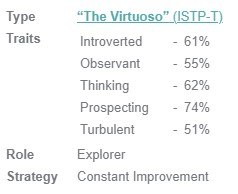
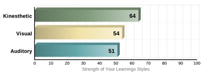

Student Code: s3888662
Student Email: s3888662@student.rmit.edu.au
Hi, I'm Ron, a 20 year old university student currently studying IT at RMIT. I am of Chinese ethnicity, however I was born and raised in Australia.
I graduated from Melbourne High School in 2018 and went to study science at Monash for 2 years before transferring into IT at RMIT.
I primarily speak English but I can also speak conversational Mandarin.
I enjoy playing games, mainly CS:GO and Fortnite. Other things I do in my free time are watch movies and shows, play basketball and I occasionally edit videos. I have a dog, Arrow, who is a pure beagle.
Growing up in the 2000’s I have always been surrounded by tech; with PCs, laptops, tablets and smartphones being invented and becoming common household items in the past two decades. Despite growing up with these technologies, I have always been fascinated by them and what they could do, especially devices like the smartphone, which has a crazy amount of hardware and software, all crammed into a device that can fit into your pocket.
Prior to 2021, the only past experience I have had in IT is an elective I had chosen in year 10: software development. In that class we used C++, and we made simple programs such as a calculator, snake game and our own little project.
2020 was a very different year for most people, myself included. I was struggling with university, and the few classes I kept up with, I didn’t enjoy. I was spending all day at my PC, whether it be for university, playing games or watching something. It was around mid-2020 that I decided I needed a change of pace and started looking into other courses. IT stood out to me as a course I would potentially enjoy and flourish in.
After finishing my studies at RMIT, I expect to be able to be able to code to a reasonable extent and to be able to choose a pathway further down. Some careers I may be interested in would be being an app developer, game developer or have some sort of job in cyber security.
The job is to be a game programmer that works with VR in 6 degress of movement (movement of the camera and the player). Two big aspects of this job appeals to me; being part of a team that will create a game, and being able to use technology to bring a new experience of gameplay.
I play games a lot, and in particular, there was a game that I was very invested in a couple of years ago (Realm of the Mad God).When I wasn’t playing the game, I was busy on the forums, creating ideas or sprites for content. There weren’t any incentives for doing this, I just wanted to make things for a game I loved, because when you finallyget to see your impact on the game, it gives you a sense of fufillment.
I always get excited with the question ‘what’s next?’. When box TV’s were replaced with plasma screens, or when flip phones were replaced with smartphones, I felt like the future was finally here. The same goes for the progression of games. A VR game with 6 degrees of freedom seems like the next step in delivering a ‘next-gen’ gameplay experience, and I want to be part of a team that will be developing a game with that kind of technology.
To be considered for this position I will need:
I currently have:
To achieve the skills, qualifications and experience required for this role I will have a 3-5 year plan in which I will:
First Year:
Second/Third Year:
Fourth/Fifth Year:
If I stick to this plan, then by the time I am 1-2 years out of university, I should meet the requirements of the job listing.
Here are my results of a Myer-Briggs test, a Big Five Personality test and a learning styles test.
 Both the Myer-Briggs and the Big Five tests show that I tend to be a little more introverted, rather than extroverted. They also slightly contradict each other, with the Myer-Briggs considering me to be more ‘thinking’ rather than ‘feeling’, while the Big Five labels me to be a very emotional person. These define me as someone who while comfortable in a crowd or with others, doesn’t quite enjoy being the center of attention and is able to think with both head and heart. Being in the middle of both of these spectrums gives me a good balance of being personable, but not overbearing and empathetic, but not irrational.
The Myer-Briggs and Big Five tests also agree that I tend to be an explorer – that I am very open to new experiences. This could be why my learning styles seemed to favour kinesthetic approach, I’d much prefer a hands-on task to gain experience.
With these results in mind, my personality seems to one more of a team player, rather than a leader. I don’t mind working in groups or alone, however when being in a group, I would take more of a backseat. The Big Five personalities test also rates me very highly in agreeableness. This accurately reflects on how I have worked in groups in the past – others would be the one to be allocating tasks and roles and I would do the tasks I was allocated. This is probably a good choice seeing how the Myer-Briggs gives me a 74% in prospecting rather than judging. This means I’m more inclined to figuring things out as I go rather than plan things out ahead of time and stick to a schedule. When forming a team that includes me, someone more suited to being a team leader should be included, someone more extroverted and more organised.
I would like to design and create an aim trainer specifically tailored toward CS:GO players. The application would serve as a replacement to warmups in either deathmatch, bots, Aim Lab and other aim training programs. The program will feature targets and weapons that can replicate the gameplay found in CS:GO and aims to help more ‘real situations’ found in CS:GO rather than mindlessly clicking on circles. While not being an actual game itself, I believe it would definitely give me much needed experience in game programming.
The big problem is that none of the previous ‘warmup’ or ‘practice’ options could really substitute CS:GO’s fundamental mechanics. Deathmatch would put you in a lobby with 20 enemies, all charging you at once. Bots, even on the hardest difficulty aren’t a big enough challenge to be a sufficient practice. The final alternative is Aim Lab, a program becoming increasingly popular due to the rise of Valorant and more people getting into FPS games. Aim Lab can help with reflexes, but past that, it won’t help with many other aspects of gameplay that are crucial to being a good player, in fact many pro CS:GO players avoid Aim Lab and similar programs and opt to play in Deathmatch instead. Another popular aim trainer is KovaaKs (or KovaaK 2.0), which is similar to Aim Lab, but has much more customization and even features community made content, however KovaaKs comes with a $15 price tag, a price not many are willing to pay
There are so many more aspects to aim than just being able to flick your mouse onto a target. In fact, one of the biggest aspects is having good crosshair placement- a skill which requires you not to move your mouse.
Ideally, the program would have a very similar look and feel to CS:GO. A couple of the big differences I would like that would set it apart is:
I expect the biggest challenge to be programming the different guns and their spray. Sprays will follow a general pattern, but will also have elements of randomness and bloom. Combine these with movement and movement inaccuracy and there will be so many different variables working on each bullet fired.
Software required to code this would probably just be Unity, however CS:GO and many similar games were made on Source Engine so that could potentially be used as an alternative. The hardware required would probably just be a decent PC. Honestly, I don’t even know what the skills required to make this are, however I do believe that with a couple months practising, I could get a simple version of this application working.
If the project is successful, players would have a much better alternative to practice and warmup for CS:GO. Players would focus on more aspects of the game such as positioning, movement and spraying, rather than just working on reflex and flicks.